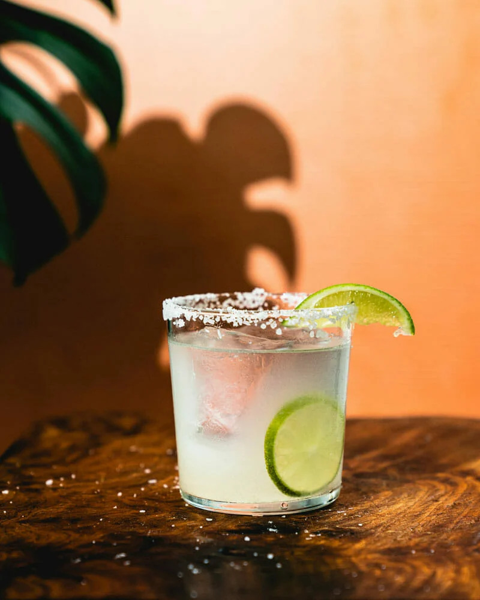

Dan's Favorite Margarita

Description
A margarita is the perfect drink for all occasions. This classic drink is perfectly tangy and balanced.
Make an individual drink or a pitcher for a night with friends. Here's how to make the best classic margarita on the rocks… in just 5 minutes!
Ingredients
- 1.5 ounces tequila
- 1 ounce Cointreau or Triple Sec
- 3/4 ounce lime juice
Steps
- Rim the glass with salt. A classic margarita has salt on the rim to enhance the sweet and sour flavors in the drink.
- Shake in a cocktail shaker. Take that tequila, Cointreau (or Triple Sec) and lime juice and shake it together in a cocktail shaker with 4 ice cubes.
- Strain into a glass and add ice. Strain the drink into a glass and add ice.